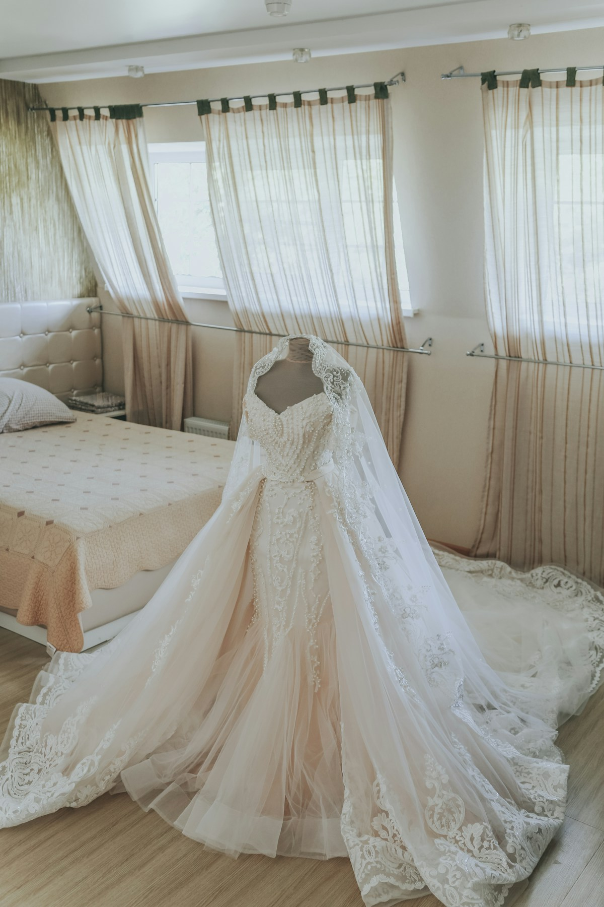

01
Planning
Budget map, vendor coordination, rundown, family flow, dan keputusan hari-H.
Kami menyatukan planner, dekor, catering, foto, video, entertainment, dan detail hari-H dalam satu arah kreatif—agar pernikahan Anda terasa utuh, bukan seperti kumpulan vendor yang kebetulan berada di tempat yang sama.


Soft florals · intimate lighting · family-forward flow
Kami menyusun vendor dan pengalaman sebagai satu sistem: keputusan kreatif, alur tamu, produksi, timeline, dan komunikasi dikelola agar saling mendukung.
Budget map, vendor coordination, rundown, family flow, dan keputusan hari-H.
Decor, florals, stationery, styling, signage, dan arah visual yang konsisten.
Catering, entertainment, guest journey, hospitality, dan detail yang terasa.
Photography, film, content, dan momen keluarga yang tidak kehilangan spontanitas.
Bukan memilih tema dari katalog. Pilih rasa yang paling dekat dengan Anda, lalu kami terjemahkan ke vendor, detail, dan flow.

Prioritas, skala acara, rasa yang diinginkan, dan batas budget diselaraskan.
Kami pilih kombinasi vendor yang tepat—bukan sekadar nama yang sedang populer.
Semua keputusan visual, rundown, floorplan, dan kebutuhan teknis dipertemukan.
Tim menjaga flow hari-H agar Anda dan keluarga tidak menjadi project manager di hari sendiri.
Harga berikut hanya untuk demonstrasi portfolio.
Bisa. Kami dapat bekerja dengan vendor yang sudah dipilih selama scope, komunikasi, dan tanggung jawab masing-masing jelas.
Tergantung skala acara dan venue, tetapi semakin awal semakin banyak pilihan tanggal dan vendor yang tersedia.
Untuk konsep portfolio ini, ya, dengan scope produksi dan logistik yang disesuaikan lokasi.
Kirim perkiraan tanggal, kota, jumlah tamu, dan gambaran acara. Kami bantu memetakan langkah berikutnya.
Cek tanggal via WhatsApp ↗